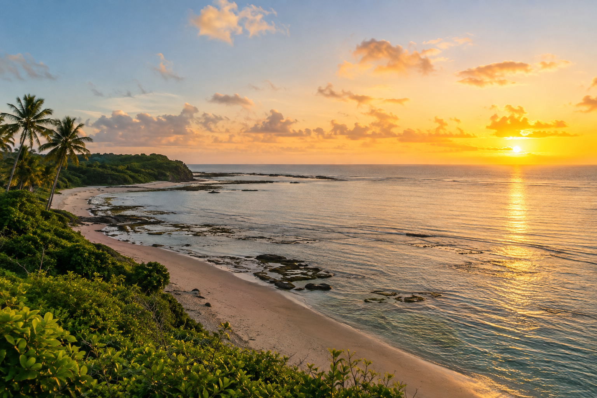
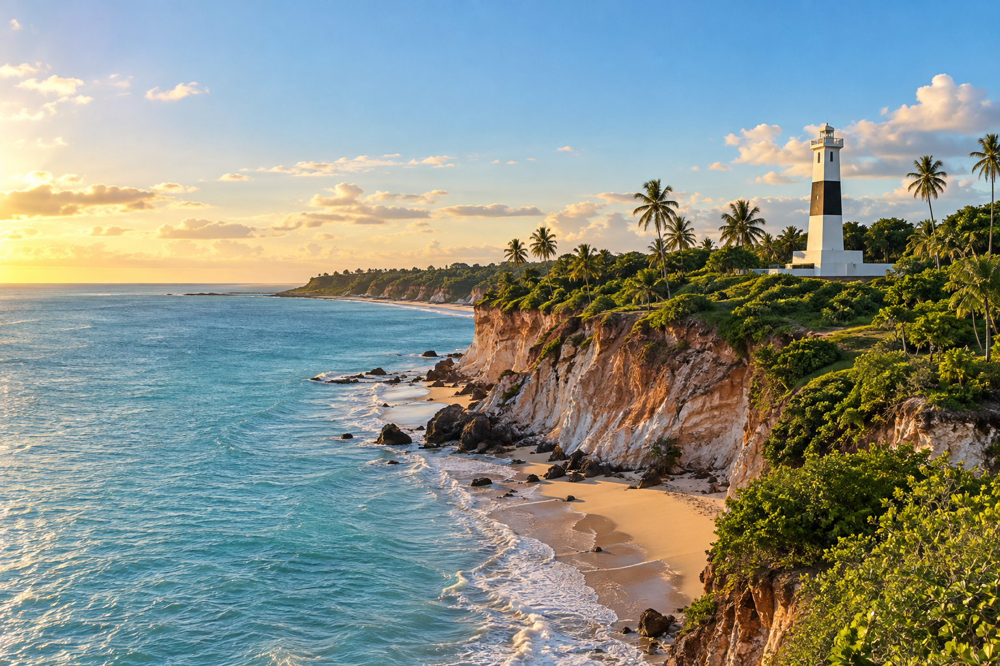
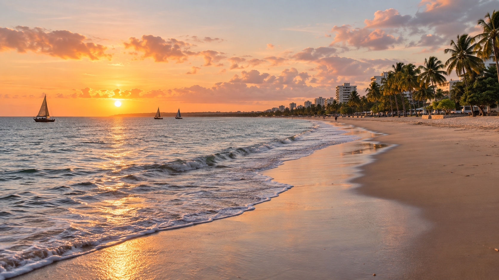
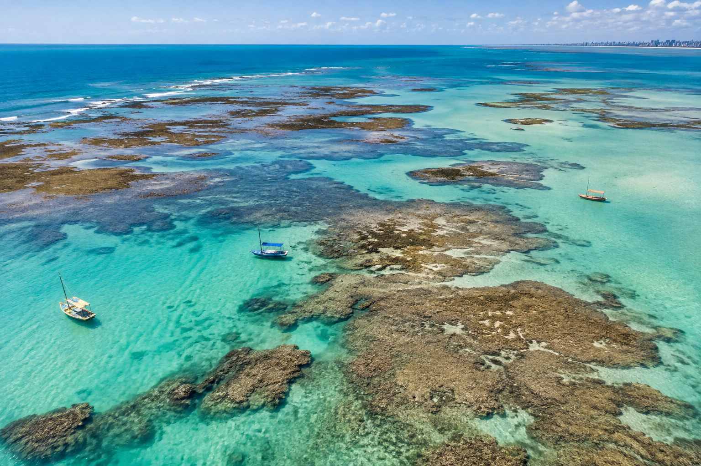
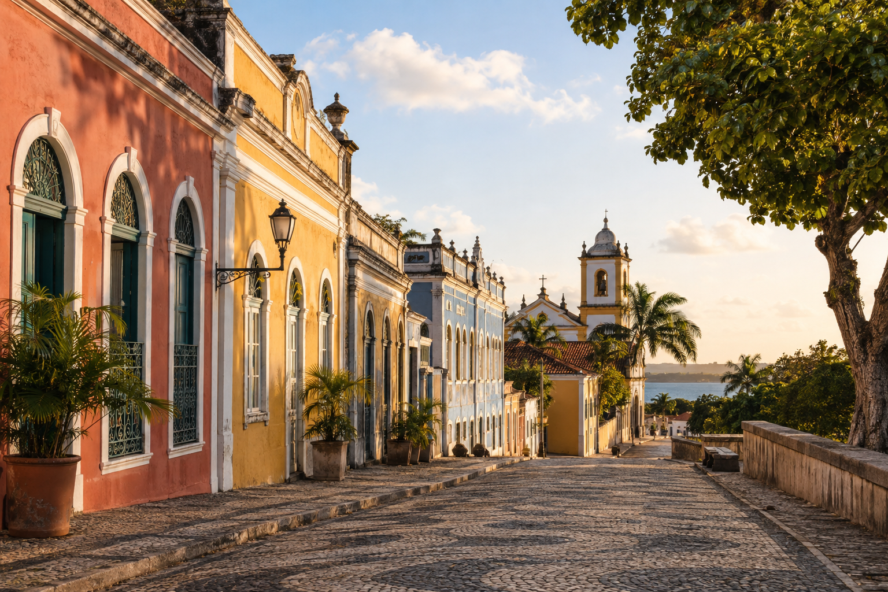
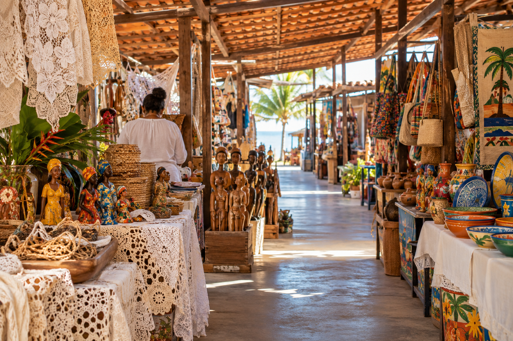

JOÃO PESSOA, PARAÍBA
Do primeiro sol das Américas à orla que convida a ficar, João Pessoa mistura mar, cultura e uma hospitalidade que se descobre sem pressa.






Comece pelo lado leste: é aqui que fica o ponto mais oriental das Américas. Chegar cedo transforma o nascer do sol no primeiro item do seu roteiro.
Leve água, protetor e tempo para observar o encontro entre mar, recifes e vegetação costeira.
Falésias, ciclovia e mar fazem da praia de Cabo Branco uma pausa obrigatória. O farol, a poucos metros do Seixas, é um dos símbolos mais marcantes da cidade.
Vale unir a visita ao farol a um passeio tranquilo pela orla, especialmente nas primeiras horas do dia.
Tambaú reúne praia urbana, bares, feirinha e o vai-e-vem das jangadas. É uma ótima base para quem quer sentir a cidade a pé.
Na maré baixa, os passeios para Picãozinho revelam piscinas naturais em mar aberto.
Recifes e águas claras formam piscinas naturais próximas à costa. Consulte a tábua de marés e escolha operadores credenciados antes de embarcar.
É um passeio para apreciar com cuidado: não pise nos corais e leve seu lixo de volta.
Ruas, igrejas, casarões e centros culturais guardam camadas da história de uma cidade fundada em 1585. Caminhe sem roteiro rígido e deixe a arquitetura conduzir.
Inclua uma parada no Hotel Globo para ver o rio Sanhauá e o casario do entorno.
Renda, cerâmica, madeira e fibras naturais carregam o trabalho de artistas paraibanos. A Feirinha e o Mercado de Artesanato de Tambaú são boas paradas para levar uma lembrança com história.
Prefira comprar diretamente de artesãs e artesãos: assim a viagem também fortalece a cultura local.
ANTES DE IR
UM OLHAR POR VEZ
JOÃO PESSOA EM CONTEXTO
Dados: IBGE (Censo 2022 e área territorial) e Prefeitura de João Pessoa — 24 km de praias.
BORA PRA JAMPA?
JOÃO PESSOA
PARAÍBA · BRASIL